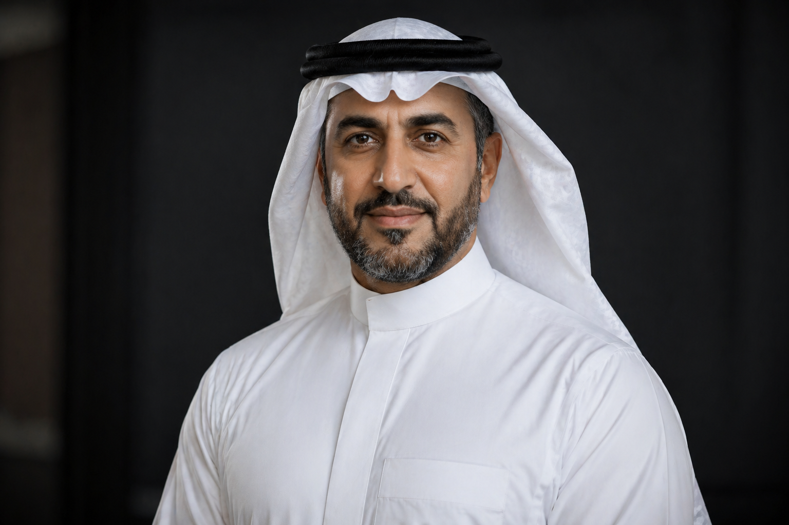

Energy Leadership
Positioning Aramco across global energy markets with emphasis on operational scale and reliability.
Executive Digital Presence Demo
President & CEO, Aramco
Global energy leadership shaped by operational excellence, innovation strategy, and long-term industry impact.

Amin H. Nasser is President & CEO of Aramco and a member of the company's Board of Directors. His Aramco career spans four decades, including senior leadership in Upstream, and his current leadership extends across upstream, downstream, chemicals, innovation, technology strategy, and cleaner energy efforts.
Leadership Focus
Positioning Aramco across global energy markets with emphasis on operational scale and reliability.
Advancing technology initiatives that support the company's long-term energy and materials ambitions.
Supporting education, training, and young professional engagement through Aramco leadership channels.
Championing investments in cleaner energy products, fuel-engine interfaces, renewables, and emissions reduction efforts.
Advocating a world-class supply chain ecosystem that includes small and medium-sized enterprises.
Career Timeline
Bachelor's degree in Petroleum Engineering from King Fahd University of Petroleum and Minerals.
Served in Upstream leadership and led Aramco's largest capital investment program in its integrated oil and gas portfolio.
Leads a world-leading integrated energy and chemicals enterprise and serves on the company's Board of Directors.
Boards & Advisory Roles
Awards & Recognition
Education